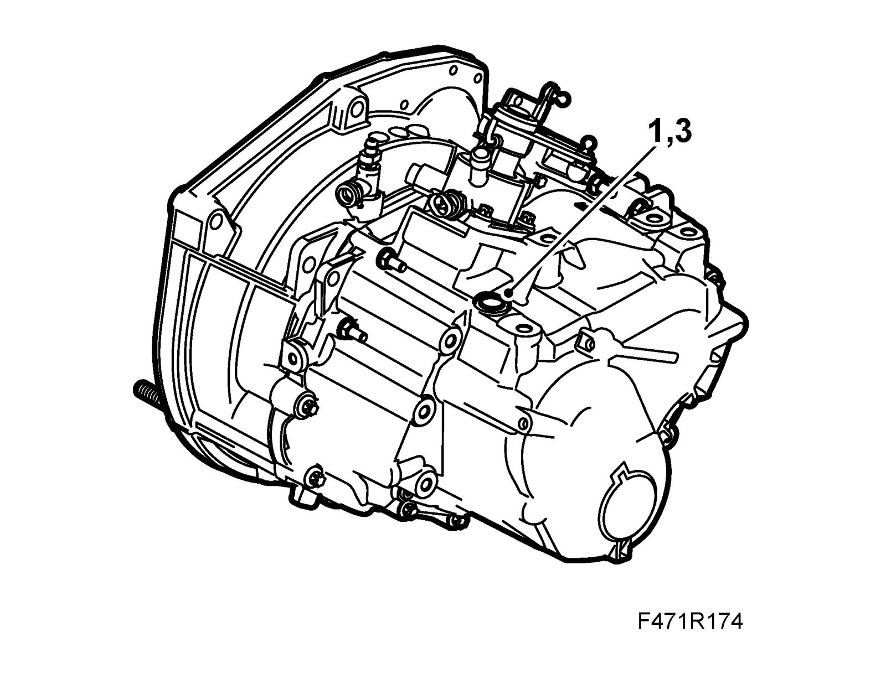

Fluid - M/T: Service and Repair
Filling/changing the transmission fluid
The gearbox has no level plug. In order to ascertain the level the gearbox must first be drained at the drain plug.
1. Remove the filler plug.
2. Fill with oil in accordance with Summary of lubricants and sealants.
FWD: 2.2 liters
4WD: 1.6 liters

3. Fit the filler plug.
Tightening torque 45 Nm (33 lbf ft)